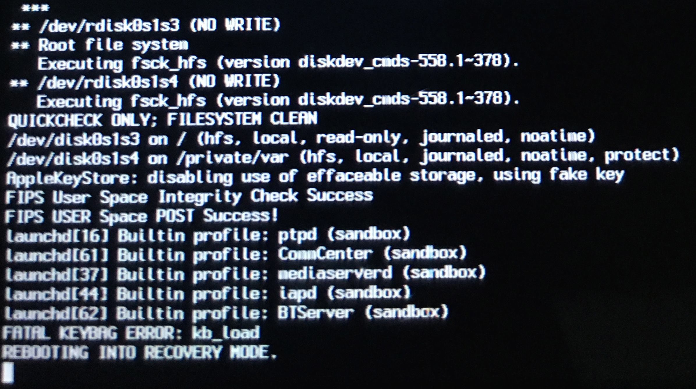

First boot
Configuring Way Out
Install and launch Way Out. Press i button and open settings:Enter path to iBSS image in Image 1 section and path to iBEC image in Image 2 section. Image type and version should appear immediately in entries if images are valid:
Save settings and slide to boot:
Important note: device should be unplugged, otherwise you may get reboot instead of kloader jump. Also, in case of Lightning-devices, it should be unplugged while entire system uptime, so if it was plugged, reboot it first. Otherwise you'll get kernel panic due to AppleTristar kernel extension
Now your tactic depends on fixkeybag existance:
If you have NOT installed fixkeybag
After screen turns black wait few seconds and press any hardware button. Screen will lit up, then logo will appear and kernel will boot in verbose mode. In the end you should see something like this:
You'll know your Device Tree patch is correct, if AppleKeyStore: disabling use of effaceable storage, using fake key message appeared. Your device will reboot and enter Recovery mode. No worries, it's easily fixable:
irecovery -a
Now feel free to install fixkeybag (this process is described in Part 4) and boot againIf you have installed fixkeybag
Your device should successfully boot to second iOS. In the end of the log you will see AppleKeyStore: disabling use of effaceable storage, using fake key and messages about keybag generating:Generating keybag...
_MKBKeyBagCreateSystem: Can't set the system bag: e00002c1
AppleKeyStore:cp_key_store_action(0)
No worries, "can't set the system bag" message is OK